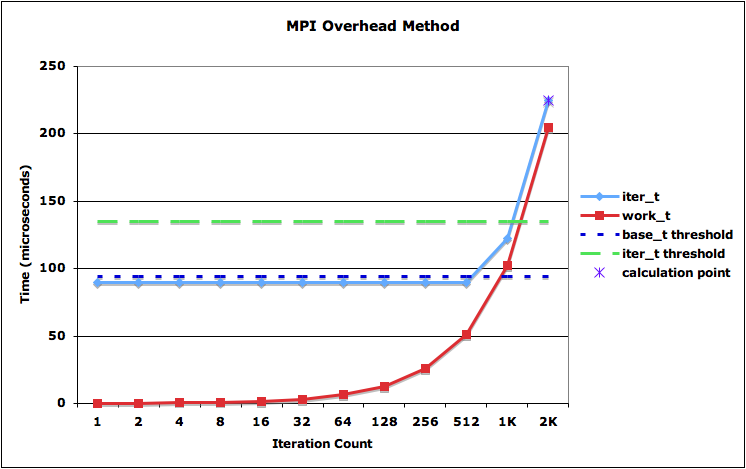
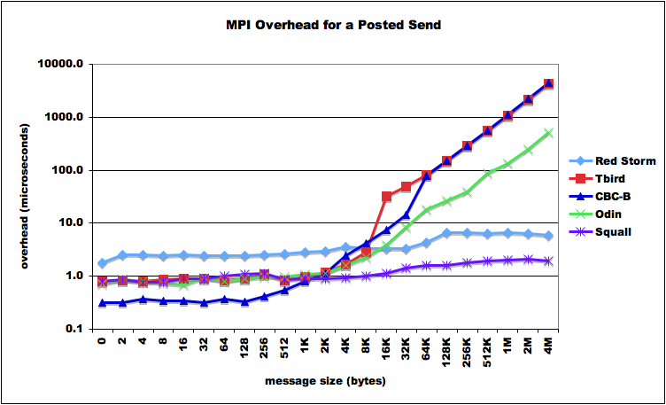
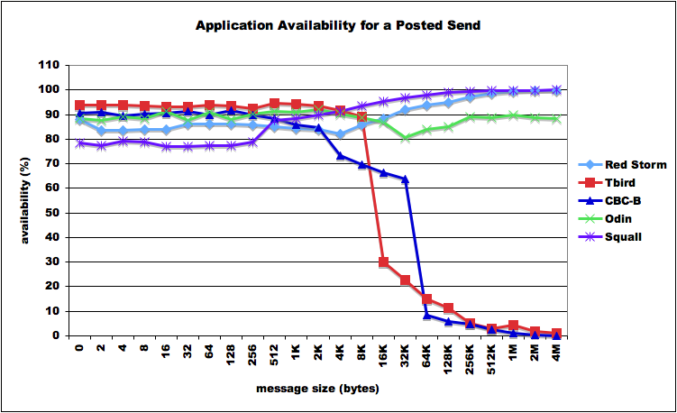
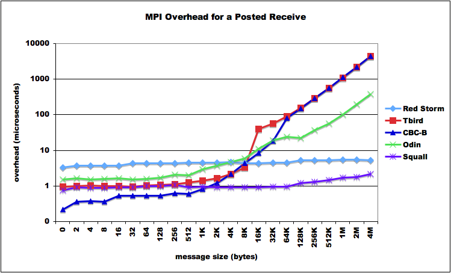
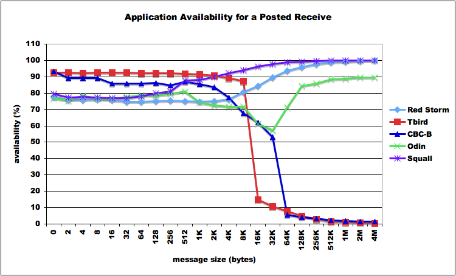

Back to main page
Host Processor Overhead
Method
There are multiple methods an application can use to overlap
computation and communication using MPI. The method used by this
routine is the post-work-wait loop using the MPI non-blocking send and
receive calls, MPI_Isend() and MPI_Irecv(), to initiate the respective
transfer, perform some work, and then wait for the transfer to complete
using MPI_Wait(). This method is typical of most applications, and
hence makes for the most realistic measure of a micro-benchmark.
Periodic polling methods have also been analyzed [1], but that
particular method only makes sense if the application knows that
progress will not be made without periodic MPI calls during the
transfer. Overhead is defined to be [2]:
"… the overhead, defined as the length
of time that a processor is engaged in the transmission or reception of
each message; during this time, the processor cannot perform other
operations. "
Application availability is defined to be the fraction of total
transfer time that the application is free to perform non-MPI
related work.
Application Availability = 1 –
(overhead / transfer time) (1)
Figure 1 illustrates the method used for determining the overhead time
and the message transfer time. For each iteration of the post-work-wait
loop the amount of work performed (work_t), which is overlapped in time
with the message transfer, increases and the total amount of time for
the loop to complete (iter_t) is measured. If the work interval is
small, it completes before the message transfer is complete. At some
point the work interval is greater than the message transfer time and
the message transfer completes first. At this point, the loop time
becomes the amount of time required to perform the work plus the
overhead time required by the host processor to complete the transfer.
The overhead can then be calculated by measuring the amount of time
used to perform the same amount of work without overlapping a message
transfer and subtracting this value from the loop time.
The message transfer time is equal to the loop time before the work
interval becomes the dominant factor. In order to get an accurate
estimate of the transfer time, the loop time values are accumulated and
averaged, but only those values measured before the work interval
starts to contribute to the loop time. Those values used in the average
calculation are determined by comparing the iteration time to a given
threshold (base_t). This threshold must be set sufficiently high to
avoid a premature stop in the accumulation of the values used for the
average calculation, but not so high as to use values measured after
the work becomes a factor. The method does not automatically determine
the threshold value. It is best to determine it empirically for a given
system by trying different values and observing the results in verbose
mode. A typical value is 1.02 to 1.05 times the message transfer time.
Figure 1 also shows an iteration loop stop threshold (iter_t). This
threshold is not critical and can be of any value as long as it is
ensured that the total loop time is significantly larger than the
transfer time. A typical value is 1.5 to 2 times the transfer time. In
theory, the method could stop when the base_t threshold is exceeded,
but in practice it has been found that this point can be too close to
the knee of the curve to provide a reliable measurement. In addition,
it is not necessary to calculate the work interval without messaging
until the final sample has been taken.

Figure. 1. A conceptual illustration of
the message transfer time (iter_t) of a given message size for each
iteration of the algorithm, with the work performed (work_t) increasing
for each iteration. The message transfer time calculation threshold
(base_t) and the iteration stop threshold (iter_t) are also shown along
with the point at which the overhead calculation is taken.
Usage
The source is distributed as a gzip'd tarball. To install,
% cd installdir
% tar xzf smb.tar.gz
To build,
% cd smb/src/mpi_overhead
% make
The makefile assumes that mpicc is the compiler and is in the user's
PATH. If this is not the case, edit Makefile to define the appropriate
compiler and switches. The routine nominally is executed on two nodes.
A single runtime instance will measure overhead and availability for a
given message size. E.g.
% mpirun -np 2 ./mpi_overhead -v
Calculating send overhead
Iterations are being calculated
automatically
Message size is 8 bytes
Overhead comparison threshold is
1.500000 (50.0%)
Base time comparison threshold is
1.020000 (2.0%)
Timing resolution is 0.10 uS
Using 1000 iterations per work
value
work
iter_t
base_t
1
3.992
3.992
2
3.991
3.991
4
3.991
3.991
8
3.993
3.992
16
3.985
3.990
32
3.986
3.990
64
4.002
3.991
128
3.978
3.990
256
4.002
3.991
512
3.975
3.990
1024
4.172
3.990
2048
5.933
3.990
4096
9.465
3.990
msgsize iterations
iter_t
work_t overhead
base_t avail(%)
8
1000
9.465
8.608
0.858
3.990
78.5
mpi_overhead: done
In this example, the -v switch prints out the intermediate results as
the work is interval is increased. When the iter_t threshold is
exceeded, then the iteration loop terminates and the final calculations
are made and the results are printed to stdout. In this case, the
overhead = 9.465 - 8.608 = 0.858 uSec, the average loop message
transfer time is 3.990 uSec, and the availability = 1 - 0.858/3.990 =
78.5%. It should be pointed out the the base_t value is a running
average of the iter_t values, until the base_t threshold is exceeded.
In the above example this occurs when the work interval is 1024.
In general, the usage of the routine is
% mpirun -np 2 ./mpi_overhead -q
Usage:./mpi_overhead
[-r | --recv] measure receive overhead, default is send
[-i | --iterations num_iterations] default = autocalculate
[-m | --msgsize size] default = 8 bytes
[-t | --thresh threshold] default = 1.500000
[-b | --bthresh base time threshold] default = 1.020000
[-n | --nohdr] don't print header information, default == off
[-v | --verbose] print partial results, default == off
The default operation is a send. To measure receive performance,
specify the --recv switch. The iter_t and base_t thresholds can be
defined on the command line also. As was discussed in the method, the
base_t threshold for a given system may need to be determined
empirically. If the base_t value is set too small, the base_t average
value calculation will terminate too early. This can occur if there is
significant noise in the system and the hence a large variation in
measured iter_t values for each iteration of the work loop.
In order to run the routine for a series of message sizes, an example
script is provided. The script assumes mpirun is the command to use for
launching an MPI job. Edit the script for the appropriate command for
your system. A simple execution of the script results in a series of
results being printed out. These results can then be imported into your
favorite spreadsheet or plotting routine for analysis.
% ./run_script
######### START #########
Running on n107
Dir is
/scratch2/dwdoerf/smb/source/mpi_overhead
msgsize iterations
iter_t
work_t overhead
base_t avail(%)
0
1000
5.708
4.932
0.776
3.765
79.4
2
1000
9.308
8.444
0.863
3.881
77.8
4
1000
5.681
4.969
0.712
3.773
81.1
8
1000
5.700
4.974
0.726
3.785
80.8
16
1000
9.320
8.485
0.835
3.890
78.5
32
1000
9.324
8.442
0.882
3.944
77.6
64
1000
9.428
8.445
0.983
4.507
78.2
128
1000
9.491
8.484
1.007
4.863
79.3
256
1000
9.591
8.482
1.110
5.487
79.8
512
1000
16.452
15.499
0.952
6.624
85.6
1024
1000
16.495
15.529
0.965
7.216
86.6
2048
1000
16.509
15.521
0.988
8.509
88.4
4096
1000
16.510
15.480
1.030
10.674
90.4
8192
1000
30.629
29.546
1.083
15.365
93.0
16384
1000
58.887
57.682
1.205
24.688
95.1
32768
1000
115.392 113.956
1.436
43.360
96.7
65536
100
228.098 226.690
1.408
82.308
98.3
131072
100
453.242 451.644
1.598
156.938
99.0
262144
100
903.974 901.958
2.016
306.440
99.3
524288
100
1804.092 1802.496
1.596
604.897
99.7
1048576
100
1804.090 1802.560
1.530 1202.453
99.9
2097152
100
3605.904 3603.544
2.360 2396.718
99.9
4194304
100
7208.664 7205.820
2.844 4786.473
99.9
######### DONE! #########
By default, the script measures the send operation. To measure receive
performance, specify --recv.
% ./run_script --recv
######### START #########
Running on n107
Dir is
/scratch2/dwdoerf/smb/source/mpi_overhead
msgsize iterations
iter_t
work_t overhead
base_t avail(%)
0
1000
9.392
8.490
0.902
3.859
76.6
2
1000
9.526
8.493
1.033
4.173
75.3
4
1000
9.501
8.451
1.049
4.044
74.1
8
1000
9.502
8.453
1.050
4.054
74.1
16
1000
9.518
8.499
1.019
4.082
75.0
*
*
*
Results
Several platforms were used in the development of this method. Table 1
summarizes the platforms, and Figures 2 through 5 graph results for
MPI_Isend() and MPI_Irecv() operations.
Table 1: Platform
Summary
|
Red Storm |
Thunderbird |
CBC-B |
Odin |
Red Squall |
| Interconnect |
Seastar 1.2 |
InfiniBand |
InfiniBand |
Myrinet 10G |
QsNetII |
| Manufacturer |
Cray |
Cisco/Topspin |
PathScale |
Myricom |
Quadrics |
| Adapter |
Custom |
PCI-Express HCA |
InfiniPath |
Myri-10G |
Elan4 |
| Host Interface |
HT 1.0 |
PCI-Express |
HT 1.0 |
PCI-Express |
PCI-X |
| Programmable coprocessor |
Yes |
No |
No |
Yes |
Yes |
| MPI |
MPICH-1 |
MVAPICH |
InfiniPath |
MPICH-MX |
MPICH QsNet |

Fig. 2. Overhead as a function of
message size for MPI_Isend().

Fig. 3. Application availability as a
function of message size for MPI_Isend().

Fig. 4. Overhead as a function of
message size for MPI_Irecv().

Fig. 5. Application availability as a
function of message size for MPI_Irecv().
References
1. W. Lawry, C. Wilson, A. Maccabe, R. Brightwell. COMB: A
Portable Benchmark Suite for Assessing MPI Overlap. In Proceedings of the IEEE International
Conference on Cluster Computing (CLUSTER 2002), p. 472, 2002.
2. D. Culler, R. Karp, D. Patterson, A. Sahay, K. E. Schauser, E.
Santos, R. Subramonian and T. von Eicken. LogP: Towards a Realistic
Model of Parallel Computation. In Fourth
ACM SIGPLAN symposium on Principles and Practice of Parallel Programming,
pp. 262-273, 1993.
Contact Information
Douglas Doerfler
Sandia National Laboratories
Albuquerque, NM
dwdoerf@sandia.gov
(505)844-9528